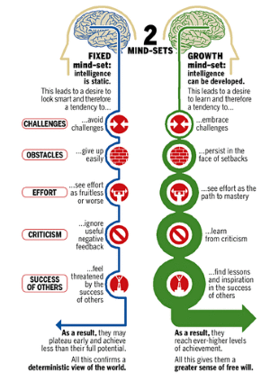

20 September 2021
Neuroplasticity & Mindset
Neuroplasticity
Neuroplasticity (brain plasticity) refers to the functional and structural changes to the brain. It involves the formation of new neuronal connections, reorganisation of pathways, and the modification of existing neural networks in the brain to alter their connections and behaviour in response to development, learning new information, sensory stimulation, or damage.[1]
There are two types of neuroplasticity: structural – in which experiences and memories change the physical structure of the brain; and functional – in which brain functions move from damaged to undamaged areas in the brain. A study by Kleim and Jones outlined 10 principles of experience-dependent neural plasticity as listed below taken from their research paper.[2]
- Use It or Lose It - failure to drive specific brain functions can lead to functional degradation.
- Use It and Improve It - Training that drives a specific brain function can lead to an enhancement of that function.
- Specificity - The nature of the training experience dictates the nature of the plasticity.
- Repitition Matters - Induction of plasticity requires sufficient repetition.
- Intensity Matters - Induction of plasticity requires sufficient training intesity.
- Time Matters - Different forms of plasticity occur at differnet times during training.
- Salience Matters - The training experience must be sufficently salient to induce plasticity.
- Age Matters - Training-induced plasticity occurs more readily in younger brains.
- Transference - Plasticity in response to one training experience can enhance the acquisition of similar behaviours.
- Interference - Plasticity in response to one experience can interfere with the acquisition of other behaviours.
How it benefits us
It allows us to recognise that our brains are more adaptable than we may think. We are always capable of learning and doing more. Whenever we learn or do something new or have new experiences, new synapses are created which means that neural pathways are formed. The more we do something, the stronger the new connections grow. Previous neural pathways that were once used but are no longer, eventually die. Benefits of the understanding the principles of neuroplasticity includes: a person’s ability to learn new things, improve and strengthen existing cognitive capabilities, and help in the recovery from brain injuries. It’s like doing weights at the gym. In order to build your arm strength and gain muscle, you must start lifting weights. With training, repetition, and training intensity, over time you will be able to increase the amount of weight you can lift.
Neuroplasticity Useful Links
- Nueroplasticity Video by Sentis
- The Conversation - What is brain plasticity and why is it so important?
- Ten Principles of Neuroplasticity
- What is Neuroplasticity? A Psychologist Explains
Growth Mindset
Dr Carol Dweck uses the term mindset to describe the way that people think about their abilities. Mindset plays a huge role in how successful we perceive ourselves to be. There are two types of mindsets: Fixed and Growth. A fixed mindset describes those who have a belief that intelligence and abilities are static – i.e., not changeable. Whereas a growth mindset describes those who believe that intelligence and abilities can change and develop over time. Having a growth mindset is extremely important for your ability to learn and grow. It enables you to have a more positive outlook on life. Those with a growth mindset, view failure as a learning opportunity and a chance to improve. They are more likely to try new things, put in more effort and are not afraid of challenges. Having a growth mindset leades to a more positive outlook and a stronger belief that things are not about winning vs losing or right vs wrong, it’s more about the journey of continual improvement.[3]
Below is a visual image to help show the differneces between a fixed vs growth mindset.
Growth Mindset Useful Links
- Carol Dweck: A Summary of Growth and Fixed Mindsets
- Growth Mindset vs. Fixed Mindset: Key Differences and How to Shift Your Child's Mindset
- Growth Mindset vs Fixed Mindset: How what you think affects what you achieve
- The Habits of Successful People: They Have a Growth Mindset
Neuroplasticity, Mindset, and Me
The ways I would engage with the principles of neuroplasticity for my own benefit include repetition and reinforcement of what I have learnt. The only way I will be able to get better at whatever I am trying to achieve is by taking the time and putting in the effort to learn.
This exploration of the growth mindset made me realise that having self-belief is important. When you believe you are capable of doing something, you are more likely to put in effort to learn and get better at it. Your success at something depends on your mindset and response towards it, such as seeing failure as a learning opportunity, and facing challenges as a chance to improve, take risks and come up with more creative ways of solving problems. It also made me realise that while I have a growth mindset towards some of my abilities; I also have a fixed mindset towards my lack of ability of other things. I think the amount of interest someone has in learning about or doing something influences their mindset towards it.
Having researched how a person’s mindset can affect the outcomes of whatever they do, I will integrate a growth mindset into my learning journey by believing in my ability to learn and grow. In my strengths and limitations reflection I noted that I struggle with self-belief. Even though there are things that I will struggle with, I will remember that the only way I will get better is to put in the effort to learn and improve. I am going to embrace challenges and focus on continual improvement rather than aiming for perfection.